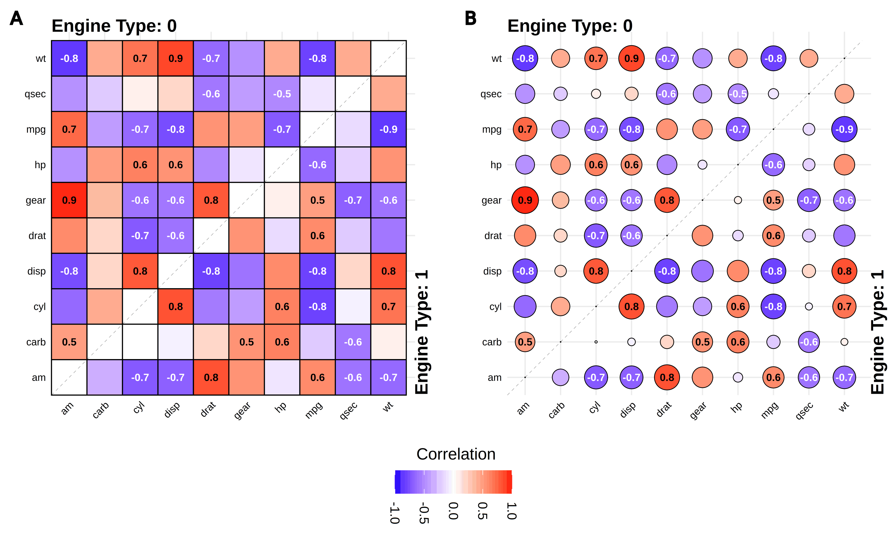

A collection of easy-to-use custom ggplot2-based functions for data exploration and analysis. Each function handles data preprocessing and returns a ggplot2 object that can be further customized using standard ggplot2 syntax. Includes general-purpose and domain-specific visualizations.
Features

General:
General-purpose visualizations
-
gg_splitcorr()- Split-Correlation Heatmap -
gg_rankshift()- Paired box-/bar- plots with rank change -
gg_criteria()- Criteria heatmap with optional barplots -
gg_conf()- Confusion/contingency table bubble plot
Bioinformatics:
Sequence analysis and genomics visualizations
-
gg_geno()- Biallelic genotype visualization with split tiles and optional barplots -
gg_seq()- Sequence coverage plot with region highlighting -
gg_seqdiff()- Sequence alignment showing only differences -
gg_biodist()- Biodistribution plots with easy free-scale faceting
Chemoinformatics:
Binding kinetics and drug discovery visualizations
-
gg_kdmap()- Kinetic rate maps (association/dissociation) with iso-affinity lines
Installation
Install from CRAN:
install.packages("ggrecipes")Development version from GitHub:
# install.packages("devtools")
devtools::install_github("Ignophi/ggrecipes")Citation
If you use ggrecipes in your work, please cite:
bibentry(
bibtype = "Article",
title = "ggrecipes: An R Package for Custom Visualizations using ggplot2",
author = "Ignophi Hu",
journal = "bioRxiv",
year = 2025,
doi = "10.64898/2025.12.18.694217",
url = "https://www.biorxiv.org/content/10.64898/2025.12.18.694217v1",
note = "Preprint"
)